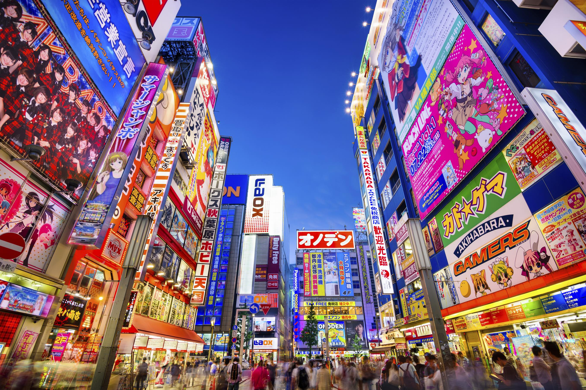
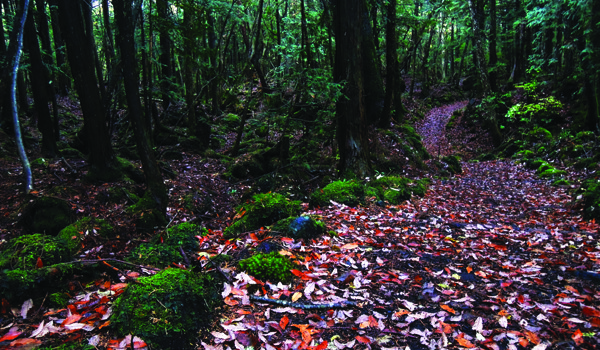
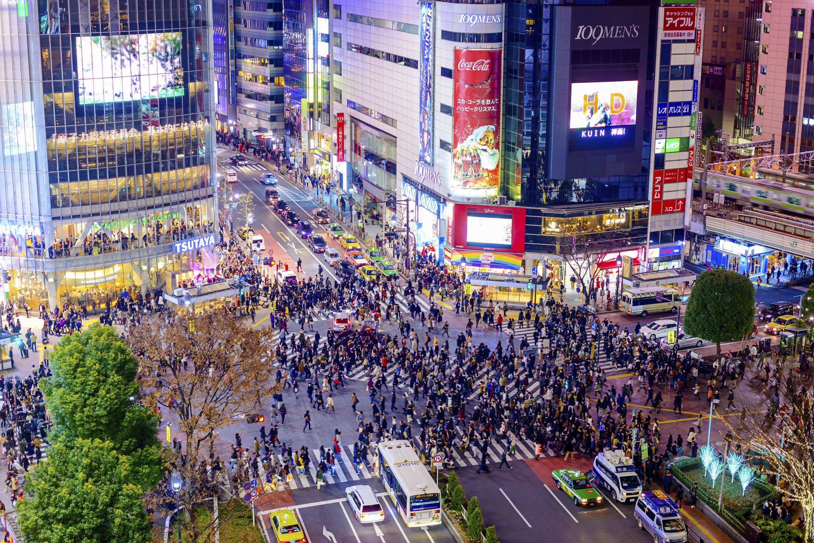

November 17-18
Tokyo
Arrival in Tokyo! Check in at AirBnB and explore the city.
Read More
11/17 Friday
- 3:45 - Flight lands at Narita Airport. Take bullet train from Narita airport into Tokyo.
- Pick up pocket wifi at airport
- Check-in at AirBnB in Akihabara
11/18 Saturday
- TBD
Read Less

November 19
Mt. Fuji
Take a day trip tour bus to Mt. Fuji and Aokigahara Forest.
Read More
11/19 Sunday
- Bus departs 8:15am from Courtyard by Marriot Tokyo Ginza and Tokyo Station
- Full-day tour from Tokyo to Mt Fuji and Aokigahara Forest
- Travel up the mountain to Fuji's 5th station — the highest point a vehicle can go
- Explore the Narusawa Ice Cave in Aokigahara Forest
- End your tour at Tokyo’s vibrant Shinjuku nightlife precinct
- Link to Tour Website
Read Less

November 20-23
Kyoto and Nara
Dani arrives and we travel to Kyoto on the Shinkansen!
Read More
11/20 Monday
- 10am Check out of AirBnB
- Store luggage at Tokyo Station
- Explore the city until Dani arrives in the afternoon
- Find Dani at Tokyo Station
- Take Shinkansen to Kyoto Station
- Check into AirBnB in Kyoto
- Get dinner in Gion District
11/21 Tuesday
- Go to Nishiki Market
- Go to Nijo Castle
- Climb the steps at Fushimi Inari Shrine (Shrine with 1000 gates)
11/22 Wednesday
- Travel to Nara
- Go to Nara Deer Park and temples
- Have dinner in Nara
- Travel back to Kyoto
11/23 Thursday
- Check out of AirBnB
- Store luggage at Kyoto Station
- Go to Arashiyama
- Take scenic train ride in Arashiyama
- Return to Tokyo on Shinkansen
- Check into Tokyo AirBnB
Read Less

November 24
Tokyo
Back in Tokyo!
Read More
11/24 Friday
- Go to Yoyogi Park/Meiji Shrine
- Explore Shibuya/Shinjuku/Harajuku
- Go on a guided izakaya crawl in Ginza
Read Less

November 25
Shiroishi - Fox Village
Travel by shinkansen to see the fox village in the north.
Read More
11/25 Saturday
- Take a day trip to Shiroishi to visit the fox village
- More info on how to get to the Fox Village here
Read Less

November 26-28
Tokyo
Last days in Tokyo
Read More
11/26 Sunday
- Check out Senso-ji Temple and Tokyo Sky Tree
11/27 Monday
- In the morning, go to Tsukiji Fish Market
- Dani leaves in the afternoon
11/28 Tuesday
- Check out of AirBnB
- Store luggage at Tokyo Station
- Last day of exploring
- Flight departs from Haneda airport at 10:55PM
Read Less